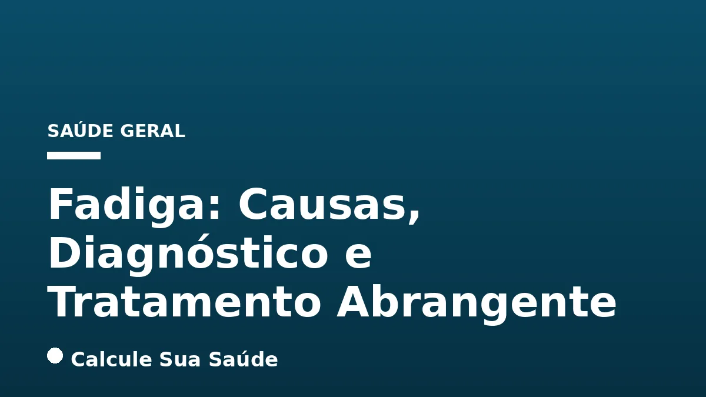

Aviso médico importante
Este conteúdo é educativo e informativo e não substitui a consulta, o diagnóstico ou o tratamento de um profissional de saúde. Em caso de sintomas, procure orientação médica.
Índice do Artigo
- 1. O Que é Fadiga? Definição e Distinções Cruciais
- 2. Classificações da Fadiga: Prolongada, Crônica e a Síndrome da Fadiga Crônica (SFC)
- 3. Síndrome da Fadiga Crônica (SFC): Uma Condição Complexa e Debilitante
- 4. Causas Diversas da Fadiga: Um Leque de Fatores Físicos e Mentais
- 5. Sintomas da Fadiga: Reconhecendo os Sinais de Alerta
- 6. Fatores de Risco e Epidemiologia da Fadiga no Brasil
- 7. O Processo Diagnóstico da Fadiga: Uma Abordagem Multidisciplinar
- 8. Prevenção da Fadiga: Estratégias para um Estilo de Vida Saudável
- 9. Abordagens Terapêuticas para a Fadiga: Tratando a Causa Subjacente
- 10. Manejo da Síndrome da Fadiga Crônica (SFC): Estratégias Multimodais
- 11. Mitos e Verdades sobre a Fadiga: Desmistificando Conceitos Comuns
- 12. Considerações Finais e a Importância da Busca por Ajuda Médica
- 13. Perguntas frequentes
A fadiga é uma queixa comum na prática médica, mas frequentemente subestimada. Longe de ser um simples cansaço que se resolve com uma boa noite de sono, a fadiga representa um desgaste físico ou mental persistente, uma sensação avassaladora de falta de energia e motivação que não melhora com o repouso adequado. Ela pode comprometer severamente a qualidade de vida, a capacidade produtiva e o bem-estar emocional de um indivíduo.
No Brasil, milhões de pessoas convivem com a fadiga de forma constante. Um levantamento recente apontou que 37% dos brasileiros relatam cansaço ou esgotamento mental de maneira frequente, o que corresponde a cerca de 61 milhões de adultos. Este cenário ressalta a importância de uma compreensão aprofundada sobre o tema, desde suas definições e classificações até as diversas causas subjacentes e as abordagens terapêuticas baseadas em evidências.
Este artigo, elaborado com rigor científico e fundamentado em fontes médicas confiáveis, visa desmistificar a fadiga, diferenciar suas manifestações e guiar você através do complexo caminho do diagnóstico e tratamento. Nosso objetivo é fornecer informações claras e precisas para que você possa identificar os sinais, buscar ajuda profissional e, finalmente, recuperar sua energia e qualidade de vida.
Em resumo
- A fadiga é um sintoma médico de desgaste físico ou mental que não melhora com o repouso, diferente da sonolência.
- Pode ser classificada como prolongada (mais de um mês) ou crônica (mais de seis meses), podendo evoluir para a Síndrome da Fadiga Crônica (SFC).
- As causas da fadiga são variadas, incluindo estilo de vida, condições médicas crônicas, infecções, distúrbios do sono, câncer, desequilíbrios hormonais, deficiências nutricionais e fatores psicológicos.
- O diagnóstico da fadiga é complexo e envolve uma avaliação clínica detalhada, com exclusão de outras condições e, no caso da SFC, a aplicação de critérios específicos.
- A prevenção foca em um estilo de vida saudável, enquanto o tratamento depende da causa subjacente, com manejo sintomático e estratégias como o 'pacing' para a SFC.
- No Brasil, a fadiga afeta milhões, com maior prevalência em mulheres e jovens, e a pandemia de COVID-19 contribuiu para o aumento dos casos de fadiga pós-viral.
1. O Que é Fadiga? Definição e Distinções Cruciais
A fadiga é mais do que uma simples sensação de cansaço após um dia exaustivo ou uma noite mal dormida. Ela é um sintoma médico complexo, caracterizado por um desgaste físico ou mental persistente, uma exaustão que não é aliviada pelo repouso e que interfere significativamente nas atividades diárias e na qualidade de vida. Essa sensação de falta de energia e motivação pode ser debilitante, afetando a capacidade de concentração, a memória e o desempenho em tarefas rotineiras.
É fundamental compreender que a fadiga não é uma doença em si, mas um sintoma que pode indicar uma variedade de condições subjacentes, desde hábitos de vida inadequados até doenças crônicas graves. A sua natureza multifacetada exige uma abordagem cuidadosa para o diagnóstico e tratamento.
Fadiga vs. Sonolência: Uma Diferenciação Essencial
Embora frequentemente confundidas, fadiga e sonolência são conceitos distintos. A sonolência refere-se à necessidade de dormir, um estado de letargia que pode ser aliviado pelo sono. A fadiga, por outro lado, é uma sensação de exaustão e falta de energia que persiste mesmo após o repouso. Uma pessoa pode sentir-se fadigada sem estar sonolenta, e vice-versa, embora muitas vezes elas possam coexistir. Compreender essa distinção é crucial para uma avaliação médica precisa, pois as causas e os tratamentos podem variar consideravelmente.
| Característica | Fadiga | Sonolência |
|---|---|---|
| Definição Principal | Desgaste físico ou mental, falta de energia e motivação | Necessidade de dormir, estado de letargia |
| Melhora com Repouso | Geralmente não melhora com o repouso adequado | Aliviada pelo sono |
| Impacto Principal | Redução da capacidade de realizar tarefas, concentração | Dificuldade em manter-se acordado, cochilos involuntários |
| Sintomas Associados | Dores musculares, dores de cabeça, irritabilidade, déficit cognitivo | Bocejos frequentes, pálpebras pesadas, dificuldade em manter os olhos abertos |
| Causas Comuns | Doenças crônicas, estresse, deficiências nutricionais, infecções | Privação de sono, distúrbios do sono (ex: apneia do sono), uso de sedativos |
2. Classificações da Fadiga: Prolongada, Crônica e a Síndrome da Fadiga Crônica (SFC)
A fadiga pode ser classificada de acordo com sua duração e impacto, o que ajuda a orientar a investigação diagnóstica. As principais classificações incluem:
- Fadiga Prolongada: Refere-se a uma fadiga incapacitante e persistente que dura pelo menos um mês. Nesses casos, a investigação das causas subjacentes deve ser iniciada para evitar a progressão para um quadro mais crônico.
- Fadiga Crônica: Caracteriza-se por uma fadiga incapacitante e prolongada que se estende por pelo menos seis meses. Quando essa fadiga não pode ser explicada por outras condições médicas ou psicológicas conhecidas e preenche critérios específicos, ela pode ser diagnosticada como Síndrome da Fadiga Crônica (SFC).
É importante ressaltar que nem toda fadiga crônica é Síndrome da Fadiga Crônica. A SFC é uma condição específica com um conjunto de critérios diagnósticos bem definidos, que a distinguem de outras formas de fadiga crônica.
3. Síndrome da Fadiga Crônica (SFC): Uma Condição Complexa e Debilitante
A Síndrome da Fadiga Crônica (SFC), também conhecida como Encefalomielite Miálgica (EM/SFC), é uma doença complexa e debilitante que afeta múltiplos sistemas do corpo. Ela se manifesta por uma fadiga profunda que não melhora com o repouso, acompanhada por uma série de outros sintomas que são agravados por qualquer tipo de esforço – físico, mental ou emocional. A SFC não é uma condição psicológica, mas uma doença física com impactos profundos na saúde mental e na qualidade de vida.
Causas e Mecanismos da SFC
A causa exata da SFC ainda é desconhecida, o que torna seu diagnóstico e tratamento desafiadores. No entanto, pesquisas sugerem que a doença pode ser desencadeada ou perpetuada por uma combinação de fatores, incluindo:
- Disfunções Imunológicas: Anormalidades no sistema imunológico, como inflamação crônica de baixo grau ou respostas imunes atípicas a infecções, são frequentemente observadas em pacientes com SFC.
- Anomalias do Sistema Nervoso: Disfunções no sistema nervoso central e autônomo podem contribuir para os sintomas, como intolerância ortostática e problemas cognitivos.
- Desequilíbrios Hormonais: Alterações nos eixos hipotálamo-hipófise-adrenal (HPA), que regulam o estresse e a produção hormonal, podem estar envolvidas.
- Infecções: Muitas vezes, a SFC é desencadeada após uma infecção viral, como mononucleose ou, mais recentemente, COVID-19.
- Fatores Genéticos e Ambientais: Uma predisposição genética combinada com gatilhos ambientais pode aumentar o risco de desenvolver a síndrome.
A compreensão desses mecanismos é fundamental para o desenvolvimento de novas abordagens terapêuticas e para a validação da SFC como uma doença orgânica grave.
4. Causas Diversas da Fadiga: Um Leque de Fatores Físicos e Mentais
A fadiga é um sintoma inespecífico que pode ter uma vasta gama de causas, tornando o diagnóstico um processo de exclusão e investigação detalhada. Compreender essas causas é o primeiro passo para um tratamento eficaz.
Fatores de Estilo de Vida e Hábitos Diários
Muitas vezes, a fadiga está diretamente ligada a hábitos e escolhas do dia a dia. A insuficiência ou má qualidade do sono é uma das causas mais comuns, assim como uma alimentação desequilibrada, pobre em nutrientes essenciais. A falta de atividade física regular pode levar à descondicionamento e fadiga, enquanto o excesso de exercícios sem recuperação adequada também pode ser exaustivo. O consumo de álcool, drogas ilícitas e até mesmo certos medicamentos (como anti-histamínicos ou alguns para tosse) podem induzir ou agravar a fadiga.
Condições Médicas Crônicas e Agudas
Diversas doenças crônicas têm a fadiga como um de seus sintomas mais proeminentes. Isso inclui condições como anemia (especialmente por deficiência de ferro), hipotireoidismo (tireoide hipoativa) ou hipertireoidismo (tireoide hiperativa), diabetes, doenças cardíacas (como insuficiência cardíaca), doença renal crônica, doenças hepáticas, doença pulmonar obstrutiva crônica (DPOC), esclerose múltipla, lúpus, artrite reumatoide, doença inflamatória intestinal, fibromialgia, doença de Parkinson e obesidade. O tratamento adequado dessas condições é crucial para aliviar a fadiga associada.
Infecções e a Fadiga Pós-Viral
Infecções, tanto agudas quanto crônicas, podem ser uma causa significativa de fadiga. Exemplos incluem mononucleose, hepatite A, B e C, HIV/AIDS e tuberculose. A pandemia de COVID-19 trouxe à tona a síndrome pós-COVID-19, ou “COVID longa”, na qual a fadiga persistente é um sintoma central, muitas vezes mimetizando a Síndrome da Fadiga Crônica pós-viral. Estima-se que cerca de 10% dos pacientes com COVID-19, mesmo em casos leves, possam desenvolver fadiga crônica pós-viral.
Distúrbios do Sono e Seu Impacto
Problemas no sono são uma causa direta e comum de fadiga. Condições como insônia, apneia obstrutiva do sono (que causa interrupções na respiração durante o sono) e síndrome das pernas inquietas impedem um sono reparador, resultando em exaustão diurna. O diagnóstico e tratamento desses distúrbios são essenciais para combater a fadiga.
Câncer e Tratamentos Oncológicos
A fadiga relacionada ao câncer é um dos sintomas mais prevalentes e graves tanto da doença em si quanto de seus tratamentos (quimioterapia, radioterapia, imunoterapia). Sua prevalência varia entre 50% e 90% dos pacientes, impactando profundamente a qualidade de vida e a adesão ao tratamento. O manejo dessa fadiga requer uma abordagem específica e multidisciplinar.
Desequilíbrios Hormonais e Deficiências Nutricionais
Alterações hormonais, como a insuficiência adrenal ou os desequilíbrios durante a menopausa, podem ser fontes importantes de fadiga. Da mesma forma, deficiências nutricionais são causas comuns. Baixos níveis de vitamina D e deficiência de ferro (mesmo antes de evoluir para anemia completa) podem levar a uma sensação de cansaço e falta de energia. A suplementação, quando indicada e supervisionada por um profissional, pode ser eficaz.
Fatores Psicológicos: Depressão, Ansiedade e Estresse
A saúde mental desempenha um papel crucial na percepção da energia. Transtornos como depressão (transtorno depressivo maior), ansiedade e estresse prolongado são causas frequentes de fadiga. O luto também pode manifestar-se com exaustão intensa. Nesses casos, o tratamento da condição psicológica subjacente é fundamental para aliviar a fadiga.
5. Sintomas da Fadiga: Reconhecendo os Sinais de Alerta
Os sintomas da fadiga podem variar em intensidade e apresentação, mas geralmente incluem uma combinação de manifestações físicas e cognitivas. É importante estar atento a esses sinais para buscar ajuda médica quando necessário.
Sintomas Comuns da Fadiga
- Cansaço intenso e persistente que não melhora com o repouso.
- Falta de energia e motivação para realizar tarefas diárias.
- Dificuldade de memória ou concentração (déficit cognitivo, muitas vezes descrito como “névoa cerebral”).
- Irritabilidade e alterações de humor, como tristeza ou frustração.
- Dores de cabeça frequentes ou persistentes.
- Dores musculares (mialgia) e nas articulações (artralgia) sem causa aparente.
- Sono não reparador, mesmo após horas de descanso.
- Mal-estar pós-esforço: uma piora significativa dos sintomas após qualquer esforço físico, mental ou emocional, que pode durar dias ou semanas. Este é um sintoma característico da Síndrome da Fadiga Crônica (SFC).
- Dor de garganta e gânglios linfáticos (ínguas) dolorosos no pescoço ou nas axilas.
- Intolerância ortostática: sensação de tontura, desmaio ou náusea ao ficar em pé ou sentado por muito tempo.
Sinais de Alerta para Atendimento de Emergência
Em alguns casos, a fadiga pode ser um sintoma de uma condição médica grave que requer atenção imediata. Procure atendimento de emergência se a fadiga for acompanhada de:
- Dor no peito.
- Falta de ar ou dificuldade para respirar.
- Batimentos cardíacos irregulares ou acelerados (arritmias).
- Sensação de desmaio ou perda de consciência.
- Dor abdominal, pélvica ou nas costas severa e súbita.
- Sangramento incomum ou inexplicável.
- Dor de cabeça intensa e súbita, diferente das dores habituais.
Esses sintomas podem indicar emergências cardiovasculares, pulmonares ou outras condições que exigem intervenção médica urgente.
6. Fatores de Risco e Epidemiologia da Fadiga no Brasil
A fadiga é um sintoma de alta prevalência global, e dados epidemiológicos ajudam a entender quem é mais afetado e quais são os contextos de maior risco. No Brasil, o cenário não é diferente, com milhões de pessoas relatando exaustão constante.
Prevalência da Fadiga no Brasil
Um levantamento realizado pelo DataFolha em diversas regiões do Brasil revelou que 37% dos brasileiros relataram cansaço ou esgotamento mental de forma constante (sempre ou frequentemente) ao longo do ano. Isso representa uma estimativa de aproximadamente 61 milhões de adultos convivendo com esse problema.
A análise demográfica mostra algumas tendências importantes:
- Gênero: As mulheres apresentam uma frequência maior de fadiga. Cerca de 20% das mulheres relataram fadiga na maioria dos dias ou todos os dias, em comparação com 13% dos homens. A Síndrome da Fadiga Crônica (SFC) também é mais comum em mulheres.
- Faixa Etária: O índice de fadiga foi mais elevado entre os adultos mais jovens, de 18 a 34 anos, atingindo 19,5%.
Para a Síndrome da Fadiga Crônica (SFC) especificamente, não existem dados oficiais abrangentes no Brasil. No entanto, estimativas sugerem que mais de 2,6 milhões de brasileiros podem ter a doença, sendo que a grande maioria permanece sem diagnóstico e tratamento adequados, o que representa um desafio significativo para a saúde pública.
Impacto da COVID-19 na Fadiga Crônica
A pandemia de COVID-19 trouxe uma nova dimensão para a epidemiologia da fadiga. Muitos pacientes que contraíram o vírus, mesmo em casos leves, desenvolveram uma síndrome pós-COVID-19, ou “COVID longa”, onde a fadiga persistente é um dos sintomas mais comuns e debilitantes. Estima-se que cerca de 10% dos pacientes que tiveram COVID-19 possam evoluir com a síndrome de fadiga crônica pós-viral. No contexto brasileiro, isso poderia significar entre 2 a 4 milhões de habitantes acometidos por essa condição, adicionando uma carga substancial aos sistemas de saúde e à qualidade de vida da população.
7. O Processo Diagnóstico da Fadiga: Uma Abordagem Multidisciplinar
O diagnóstico da fadiga, especialmente quando crônica ou incapacitante, é um processo complexo que exige uma avaliação médica detalhada. Não existe um único exame laboratorial que confirme a fadiga ou a Síndrome da Fadiga Crônica (SFC). Em vez disso, o diagnóstico baseia-se na exclusão de outras condições e na análise cuidadosa dos sintomas e histórico do paciente.
A Importância da História Clínica Detalhada
O primeiro e mais crucial passo no diagnóstico é a coleta de uma história clínica abrangente. O médico irá investigar:
- Duração e Natureza da Fadiga: Quando começou, como ela se manifesta, se é constante ou intermitente, e o que a agrava ou alivia.
- Outros Sintomas Associados: A presença de dores, problemas de sono, dificuldades cognitivas, alterações de humor, entre outros.
- Histórico Médico Completo: Doenças preexistentes, cirurgias, alergias e histórico familiar de condições relevantes.
- Uso de Medicamentos: Todos os medicamentos, suplementos e substâncias que o paciente utiliza, pois muitos podem causar fadiga como efeito colateral.
- Hábitos de Vida: Padrões de sono, dieta, nível de atividade física, consumo de álcool, tabaco e outras substâncias.
- Fatores Estressantes: Níveis de estresse no trabalho, em casa ou em outras áreas da vida.
Essa conversa inicial é fundamental para direcionar a investigação e levantar as primeiras hipóteses diagnósticas.
Exames Complementares e Exclusão de Outras Condições
Após a história clínica, o médico solicitará exames complementares para descartar outras doenças ou condições que possam estar causando a fadiga. Essa etapa é vital, pois muitas doenças com sintomas semelhantes à fadiga crônica são tratáveis. Os exames podem incluir:
- Exames de Sangue: Hemograma completo (para verificar anemia), função tireoidiana (TSH, T3, T4 para hipotireoidismo ou hipertireoidismo), glicemia (para diabetes), eletrólitos, função renal e hepática, marcadores inflamatórios e testes para deficiências nutricionais (como vitamina D e ferro).
- Testes para Infecções: Exames para mononucleose, hepatite, HIV ou outras infecções crônicas, conforme a suspeita clínica.
- Estudos do Sono: Polissonografia para diagnosticar distúrbios como apneia obstrutiva do sono.
- Avaliação Psicológica: Para descartar ou diagnosticar condições como depressão, ansiedade ou transtornos do humor.
- Outros Exames: Conforme a suspeita, podem ser solicitados exames de imagem ou avaliações por especialistas (reumatologistas, neurologistas, infectologistas).
O clínico geral é o profissional mais indicado para iniciar essa investigação, podendo encaminhar o paciente a especialistas quando a causa não é óbvia ou requer manejo específico. Para o diagnóstico da Síndrome da Fadiga Crônica (SFC), além da exclusão de outras condições, é necessário que a fadiga profunda e persistente dure mais de seis meses, não melhore com repouso, seja agravada por esforço, e seja acompanhada por mal-estar pós-esforço, sono não reparador e pelo menos um dos seguintes: déficit cognitivo ou intolerância ortostática. A frequência e gravidade dos sintomas devem ser de intensidade moderada a grave em pelo menos metade do tempo.
8. Prevenção da Fadiga: Estratégias para um Estilo de Vida Saudável
A prevenção da fadiga, especialmente aquela não associada a doenças graves, está intrinsecamente ligada à adoção e manutenção de um estilo de vida saudável. Pequenas mudanças nos hábitos diários podem ter um impacto significativo nos níveis de energia e no bem-estar geral.
Pilares da Prevenção: Sono, Nutrição e Exercício
- Sono Adequado: Priorize a qualidade e a quantidade do sono. Estabeleça uma rotina de sono regular, indo para a cama e acordando sempre nos mesmos horários, mesmo nos fins de semana. Crie um ambiente propício ao sono, escuro, silencioso e fresco. Evite telas antes de dormir.
- Dieta Balanceada: Uma alimentação rica em nutrientes é essencial para manter os níveis de energia estáveis. Consuma uma variedade de frutas, vegetais, grãos integrais, proteínas magras e gorduras saudáveis. Evite alimentos ultraprocessados, ricos em açúcares e gorduras saturadas, que podem causar picos e quedas de energia.
- Exercícios Regulares: A prática de atividades físicas moderadas e regulares, como a caminhada, natação ou ciclismo, pode aumentar a energia e melhorar o humor. No entanto, evite o excesso, que pode levar à exaustão. Encontre um equilíbrio que funcione para você.
- Hidratação: Beber bastante água ao longo do dia é crucial. A desidratação, mesmo leve, pode causar fadiga e diminuição do desempenho físico e mental.
- Evitar Excessos: Reduza o consumo de álcool, nicotina e estimulantes como a cafeína, especialmente no período da tarde e noite, pois podem interferir na qualidade do sono e nos níveis de energia.
Gerenciamento do Estresse e Bem-Estar Emocional
- Gerenciamento do Estresse: O estresse prolongado é uma causa comum de fadiga. Pratique técnicas de relaxamento, como meditação, yoga, exercícios de respiração profunda ou mindfulness. A terapia cognitivo-comportamental (TCC) pode ser útil para desenvolver estratégias de enfrentamento.
- Pausas Regulares: Durante longos períodos de trabalho ou estudo, faça pausas curtas para descansar a mente e o corpo. Isso ajuda a recarregar as energias e melhora a concentração.
- Contato Social: Manter o convívio com amigos e familiares é fundamental para o bem-estar emocional e pode ajudar a combater o isolamento e a fadiga associada.
- Tratamento Precoce: Identificar e tratar precocemente infecções virais e doenças crônicas pode prevenir a evolução para quadros de fadiga prolongada ou crônica.
9. Abordagens Terapêuticas para a Fadiga: Tratando a Causa Subjacente
O tratamento da fadiga é altamente dependente de sua causa subjacente. A abordagem principal é identificar e tratar a condição que está provocando a exaustão. Uma vez que a causa primária é endereçada, a fadiga geralmente melhora significativamente.
Por exemplo:
- Se a fadiga for decorrente de anemia, o tratamento envolverá a suplementação de ferro e a investigação da causa da deficiência.
- Em casos de hipotireoidismo, a reposição hormonal com levotiroxina é o tratamento padrão.
- Para distúrbios do sono como a apneia obstrutiva do sono, o uso de aparelhos de pressão positiva contínua nas vias aéreas (CPAP) pode ser indicado.
- Se a ansiedade ou depressão forem a causa, terapia psicológica, medicamentos antidepressivos ou ansiolíticos podem ser prescritos.
- Deficiências nutricionais, como a de vitamina D, são tratadas com suplementação.
Além do tratamento específico da causa, a implementação de mudanças no estilo de vida, conforme descrito na seção de prevenção, é sempre um pilar fundamental. Isso inclui otimizar o sono, adotar uma dieta balanceada, praticar exercícios físicos moderados e gerenciar o estresse. Em muitos casos, a combinação dessas estratégias é a mais eficaz para restaurar os níveis de energia e a qualidade de vida.
10. Manejo da Síndrome da Fadiga Crônica (SFC): Estratégias Multimodais
Para a Síndrome da Fadiga Crônica (SFC), o manejo é mais complexo, pois não há uma cura ou um tratamento isolado que garanta a remissão completa dos sintomas. A abordagem foca no controle dos sintomas, na melhoria da função e na elevação da qualidade de vida do paciente, utilizando uma combinação de estratégias.
Terapia com Exercícios Adaptados (Pacing)
A terapia com exercícios para SFC deve ser cuidadosamente adaptada e supervisionada. Evidências sugerem que a terapia com exercícios graduados (como caminhada, natação ou bicicleta, com diferentes níveis de intensidade) pode melhorar um pouco o funcionamento físico, a depressão e o sono em comparação com terapias mais passivas. No entanto, a certeza da evidência é baixa, e não se sabe se a melhora persiste a longo prazo. É crucial que o exercício seja introduzido de forma gradual e monitorada para evitar o mal-estar pós-esforço.
O conceito de Pacing (Gerenciamento de Atividades) é central no manejo da SFC. Ele consiste em encontrar um equilíbrio entre atividade e repouso para evitar a piora dos sintomas após esforço físico, mental ou emocional. O objetivo não é necessariamente retornar ao nível de atividade pré-doença, mas sim manter-se ativo sem exagerar, respeitando os limites do corpo. Isso pode envolver o uso de diários de atividade para identificar padrões e planejar períodos de descanso.
Tratamento de Sintomas Associados
O manejo da SFC frequentemente envolve o tratamento dos diversos sintomas que a acompanham:
- Dor: Medicamentos como pregabalina (Lyrica), duloxetina (Cymbalta), amitriptilina ou gabapentina (Neurontin) podem ser úteis para aliviar dores musculares e nas articulações.
- Intolerância Ortostática: Medicamentos para regular a pressão arterial ou os ritmos cardíacos podem ser benéficos para pacientes que sentem tontura ou desmaio ao ficar em pé.
- Depressão: O tratamento da depressão, quando presente, pode facilitar o manejo da doença crônica. Baixas doses de alguns antidepressivos também podem ajudar a melhorar o sono e aliviar a dor.
- Problemas de Sono: Além da higiene do sono, evitar cafeína e ajustar a rotina, distúrbios como apneia do sono podem ser tratados com aparelhos de pressão de ar.
Apoio Psicológico e Cognitivo
Técnicas de relaxamento e terapia cognitivo-comportamental (TCC) podem ser valiosas para pacientes com SFC. A TCC pode ajudar a desenvolver estratégias para lidar com o estresse, gerenciar a dor e a fadiga, e melhorar a qualidade de vida, ensinando o paciente a modificar padrões de pensamento e comportamento que podem perpetuar o ciclo da fadiga. O apoio psicológico é fundamental para o bem-estar emocional e para a adaptação à condição crônica.
É importante notar que, para fadiga em condições específicas como Acidente Vascular Cerebral (AVC) ou neuropatia periférica, as evidências sobre tratamentos específicos são limitadas. Não há estudos suficientes para comprovar que qualquer intervenção trate ou previna a fadiga em pessoas que tiveram um AVC. Para fadiga na neuropatia periférica, não há evidência suficiente para os efeitos da amantadina, e a vitamina C provavelmente traz poucos efeitos benéficos relevantes.
11. Mitos e Verdades sobre a Fadiga: Desmistificando Conceitos Comuns
A fadiga é um tema cercado por muitos equívocos. É crucial diferenciar o que a ciência diz do que são crenças populares para um entendimento mais preciso e um manejo eficaz.
Fadiga Crônica vs. Cansaço Normal
Mito: A fadiga crônica é apenas uma questão de cansaço normal.
Fato: A fadiga crônica é uma condição caracterizada por uma fadiga extrema que não melhora com o repouso e pode ser acompanhada por distúrbios cognitivos e dor muscular, distinguindo-a do cansaço comum. Ela é clinicamente significativa e incapacitante.
O Papel dos Hormônios e a Produtividade
Mito: Os hormônios não têm relação com a fadiga crônica.
Fato: Desequilíbrios hormonais, como aqueles associados ao hipotireoidismo, insuficiência adrenal e à menopausa, podem contribuir significativamente para o quadro de fadiga, afetando o metabolismo e os níveis de energia.
Mito: Produtividade significa não fazer pausas.
Fato: A ciência demonstra que pausas são essenciais para o cérebro recarregar, eliminar resíduos metabólicos, reorganizar informações e recuperar a sensibilidade à dopamina (neurotransmissor da motivação), melhorando o foco, a memória e o desempenho. A fadiga mental se acumula sem pausas.
Cansaço Muscular e o Sistema Nervoso Central
Mito: O cansaço muscular é sempre associado ao aumento do ácido lático.
Fato: Pesquisas recentes sugerem que não são os músculos que estabelecem quando há fadiga, mas o sistema nervoso central. Ele, por meio de “pistas fisiológicas, conscientes e subconscientes”, leva os músculos a parar antes da exaustão total, protegendo o cérebro, o coração e o resto do corpo de danos. O ácido lático tem um papel mais complexo e menos direto na fadiga do que se pensava.
12. Considerações Finais e a Importância da Busca por Ajuda Médica
A fadiga é um sintoma que não deve ser ignorado. Embora muitas vezes seja um reflexo de um estilo de vida agitado, ela também pode ser um sinal de alerta para condições médicas subjacentes que exigem atenção e tratamento. A Síndrome da Fadiga Crônica (SFC), em particular, é uma doença complexa e debilitante que afeta milhões de pessoas, muitas delas sem diagnóstico adequado.
Compreender as causas, os sintomas e as opções de tratamento é o primeiro passo para recuperar a qualidade de vida. Se você ou alguém que você conhece está experimentando fadiga persistente que não melhora com o repouso, é fundamental procurar um profissional de saúde. Um médico poderá realizar uma avaliação completa, solicitar os exames necessários e, se for o caso, encaminhar para especialistas. Lembre-se que este conteúdo é educativo e não substitui a consulta e avaliação médica.
A busca por um diagnóstico preciso e um plano de tratamento individualizado é essencial para gerenciar a fadiga e suas causas, permitindo que você retome suas atividades e desfrute de uma vida mais plena e com mais energia.
13. Perguntas frequentes
Qual a diferença entre fadiga e cansaço normal?
O cansaço normal é uma sensação passageira que melhora com o repouso e o sono. A fadiga, por outro lado, é um desgaste físico ou mental persistente, uma falta de energia e motivação que não é aliviada pelo descanso e que interfere nas atividades diárias.
Quando devo me preocupar com a fadiga e procurar um médico?
Você deve procurar um médico se a fadiga for persistente por mais de um mês, se for incapacitante, se não melhorar com o repouso, ou se vier acompanhada de outros sintomas preocupantes como dor no peito, falta de ar, batimentos cardíacos irregulares, dor intensa ou sangramentos incomuns.
A Síndrome da Fadiga Crônica (SFC) é uma doença psicológica?
Não, a Síndrome da Fadiga Crônica (SFC) é reconhecida como uma doença física complexa e debilitante, com base em disfunções imunológicas, neurológicas e hormonais. Embora possa ter impacto na saúde mental, ela não é de origem puramente psicológica.
Quais são as causas mais comuns de fadiga?
As causas mais comuns incluem maus hábitos de sono, alimentação inadequada, falta ou excesso de atividade física, estresse, depressão, anemia, hipotireoidismo, diabetes, infecções e distúrbios do sono como a apneia do sono.
Existe cura para a Síndrome da Fadiga Crônica (SFC)?
Atualmente, não há cura ou tratamento isolado que garanta a remissão completa da SFC. O manejo foca no controle dos sintomas, na melhoria da função e na qualidade de vida, utilizando uma abordagem multimodal que pode incluir terapia com exercícios adaptados, tratamento de sintomas associados e apoio psicológico.
Como a COVID-19 se relaciona com a fadiga crônica?
A pandemia de COVID-19 levou a um aumento nos casos de fadiga crônica pós-viral, conhecida como 'COVID longa'. Estima-se que cerca de 10% dos pacientes que tiveram COVID-19 podem desenvolver uma síndrome de fadiga crônica pós-viral, com sintomas semelhantes aos da SFC.
Quais mudanças no estilo de vida podem ajudar a prevenir a fadiga?
Adotar um estilo de vida saudável é crucial: garantir sono adequado e de qualidade, ter uma dieta balanceada, praticar exercícios físicos regulares (sem excesso), manter-se hidratado, evitar álcool e nicotina em excesso, e gerenciar o estresse com técnicas de relaxamento.
Leia também
Referências e Fontes
1. Einstein. Síndrome da fadiga crônica: Sintomas, Causas e Tratamentos. Disponível em: vertexaisearch.cloud.google.com
2. Mayo Clinic. Fatigue - Causes and definition. Disponível em: vertexaisearch.cloud.google.com
3. Associação Médica Brasileira (AMB) e Conselho Federal de Medicina. Fadiga Crônica: Diagnóstico e Tratamento. Disponível em: amb.org.br
4. Portal Afya. Síndrome da Fadiga Crônica: Como diagnosticar e tratar. Disponível em: vertexaisearch.cloud.google.com
5. Rede D'Or São Luiz. Fadiga. Disponível em: rededorsaoluiz.com.br
6. MedlinePlus. Fatiga. Disponível em: medlineplus.gov
7. SEGS. Fadiga atinge a maioria dos adultos, apontam pesquisas. Disponível em: segs.com.br
8. Unimed Campinas. Fadiga Crônica: o que é, quais os sintomas e como tratar. Disponível em: unimedcampinas.com.br